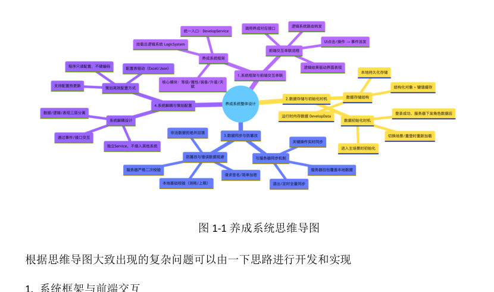
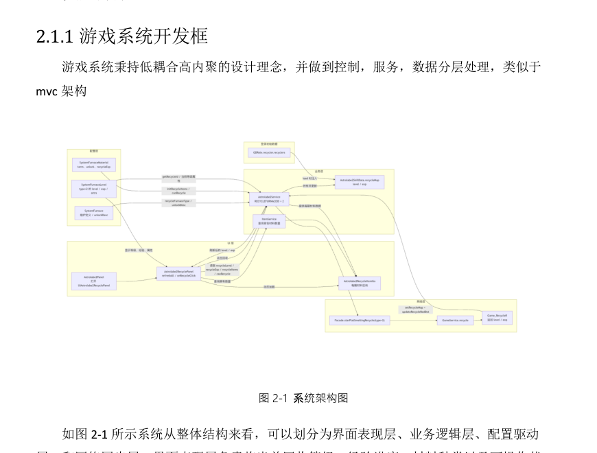
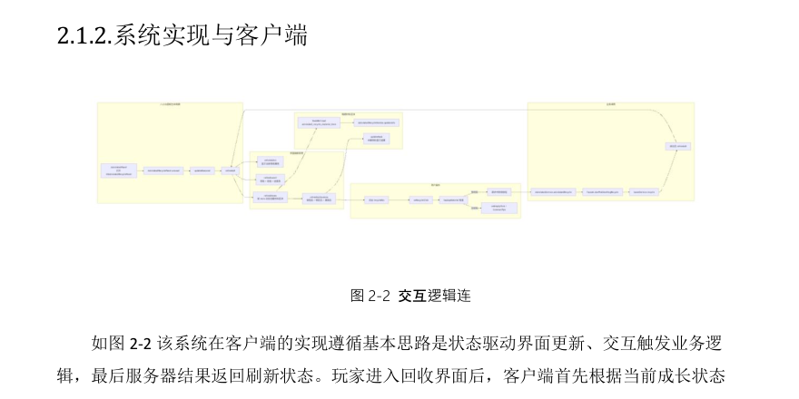
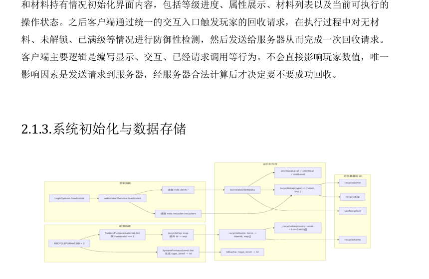
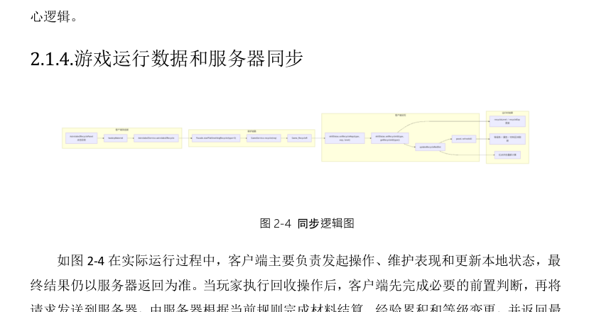
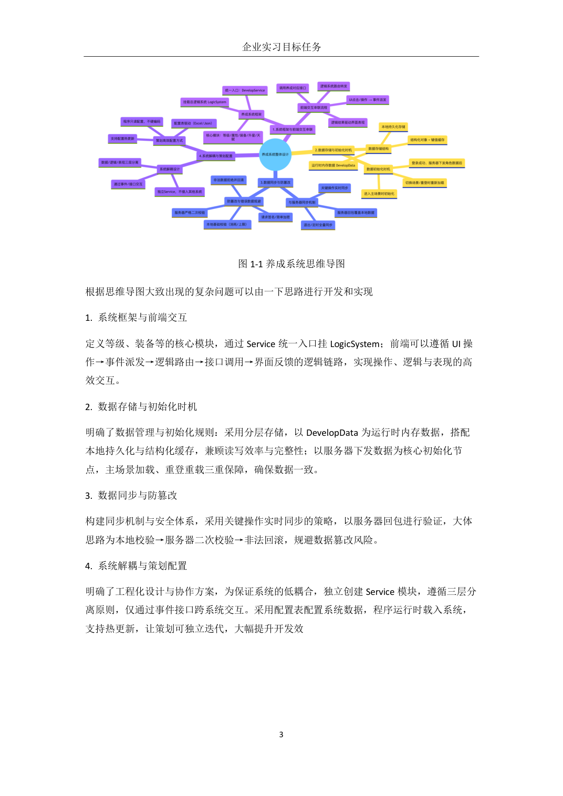
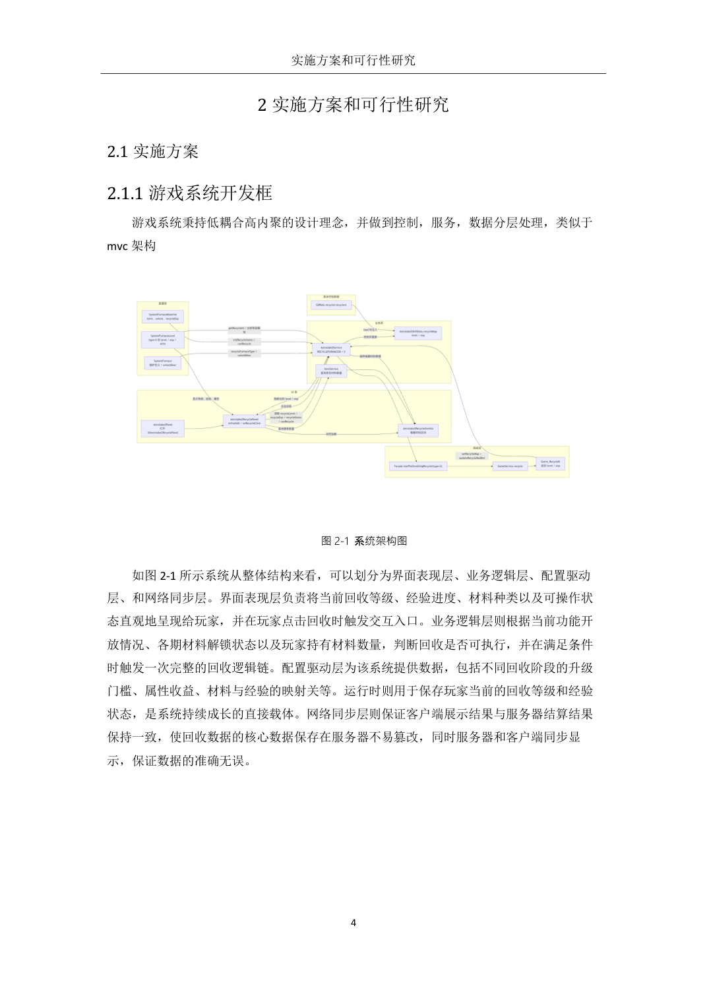

疯狂游戏 Hortor Games 实习详情
企业实习项目 | 2026/01-2026/04 | 破云工作室 | 游戏客户端开发实习生

实习概述
这段实习聚焦于小游戏客户端开发。我在疯狂游戏的破云工作室参与 ARPG 小游戏项目《迷雾大陆》相关功能开发，工作内容包括业务模块迭代、界面逻辑调试、Bug 修复以及底层框架学习。相比学校项目，这次实习更强调工程化思维，需要在既有项目架构下理解数据流、交互链路和客户端与服务器的职责边界。
报告中重点展开的是“熔炉养成系统”这一类典型业务系统：它不仅要处理前端界面展示和交互逻辑，还要兼顾配置驱动、运行时数据初始化、与服务端同步以及防篡改校验等问题，因此很适合作为实习阶段对客户端系统设计能力的总结。
目标与任务
实习目标
深入掌握 Cocos Creator 与 TypeScript 在小游戏客户端中的实际用法，熟悉团队项目框架、版本协作流程和配置驱动开发方式，逐步具备独立开发客户端业务模块的能力。
核心任务
- 学习并熟悉 Cocos Creator 引擎使用方法和项目整体框架。
- 调试通关界面、商店支付等现有业务逻辑。
- 开发熔炉养成系统，并同步角色数值到服务器。
- 学习并复刻红点树、事件分发、服务管理等基础模块。
我的职责
-
参与核心小游戏项目客户端代码编写，理解现有工程分层和模块边界，在不破坏既有框架的前提下完成功能扩展。
-
处理通关界面、商店支付等业务逻辑问题，配合需求迭代完成交互修正、状态刷新与异常场景处理。
-
围绕熔炉养成系统梳理完整链路，包括界面表现、逻辑判断、配置读取、运行时数据组织以及网络请求同步。
-
学习游戏底层通用模块的设计方式，并通过复刻练习提升对事件派发、服务注册和状态管理的理解。
报告中的关键系统拆解
1. 养成系统问题拆解
报告先用思维导图把问题拆成四部分：系统框架与前端交互、数据存储与初始化时机、数据同步与防篡改、系统解耦与策划配置。这个拆法的价值在于，它不是只把系统理解成一个“按钮 + 数值增长”的前端界面，而是把客户端系统放回完整工程环境里去思考。
图示截取自企业实习初期报告中的“图 1-1 养成系统思维导图”。
2. 系统架构设计
在系统架构上，报告把模块分成界面表现层、业务逻辑层、配置驱动层和网络同步层。这样的分层方式能把“显示什么”“如何计算”“读什么配置”“何时与服务端同步”拆开处理，减少业务逻辑和界面代码耦合，也便于后续功能迭代时只调整其中一层。

图示截取自报告中的“图 2-1 系统架构图”。
3. 客户端交互链路与数据初始化
客户端侧需要先根据角色现有成长状态和材料持有情况初始化界面，再通过统一入口接收交互请求，完成前置校验后把请求发送给服务器。与此同时，初始化阶段还要把服务器下发的角色数据与本地静态配置拼装成运行时状态，保证后续界面刷新与逻辑判断都建立在一致的数据基础上。

图 2-2 交互逻辑链

图 2-3 数据初始化图
4. 客户端与服务器同步
报告强调客户端负责发起操作、维护表现和更新本地状态，而最终结果仍以服务器返回为准。这个设计避免了玩家在本地直接篡改关键成长数据，也让“前端体验即时性”和“核心数据安全性”可以同时兼顾。对小游戏客户端开发来说，这是非常典型也非常重要的边界意识。

图示截取自报告中的“图 2-4 同步逻辑图”。
成果与收获
-
从“能做功能”进一步提升到“能理解系统为什么这么设计”，对游戏客户端架构的理解更完整。
-
熟悉了配置驱动、状态驱动 UI 刷新、客户端与服务端职责划分等实战工程模式。
-
通过复刻红点树、事件分发、服务管理等模块，建立了对底层通用框架的初步工程认知。
实习信息
企业名称
北京豪腾嘉科科技有限公司（疯狂游戏 Hortor Games）
所在团队
破云工作室
岗位名称
游戏客户端开发实习生
业务方向
微信小游戏 / ARPG 客户端系统开发
技术栈
报告要点
- 围绕熔炉养成系统展开复杂工程问题分析
- 强调界面表现、业务逻辑、配置驱动、网络同步四层协作
- 突出客户端初始化与服务端校验的重要性
报告原页摘录

